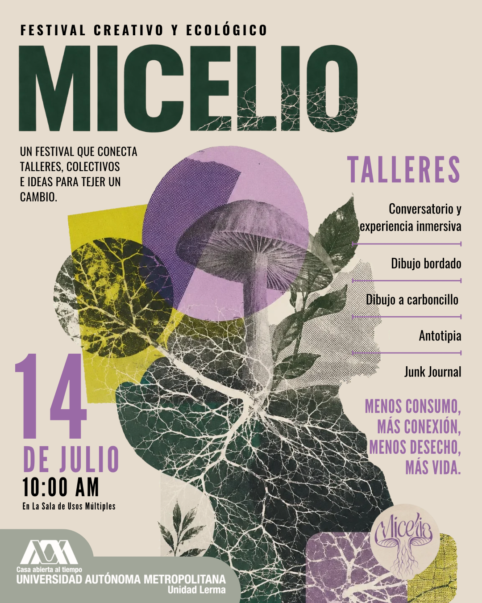
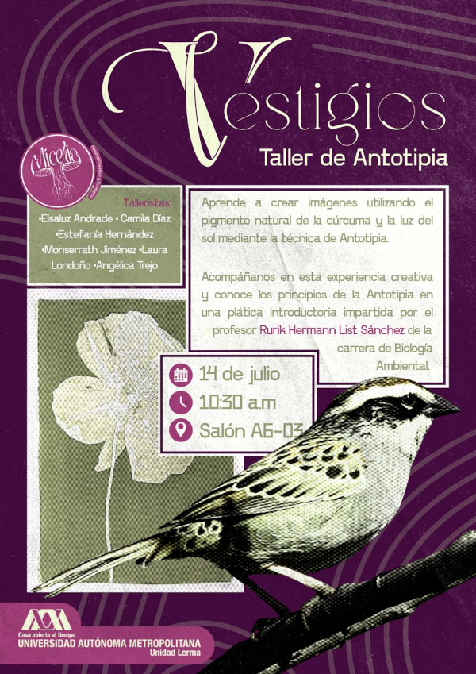
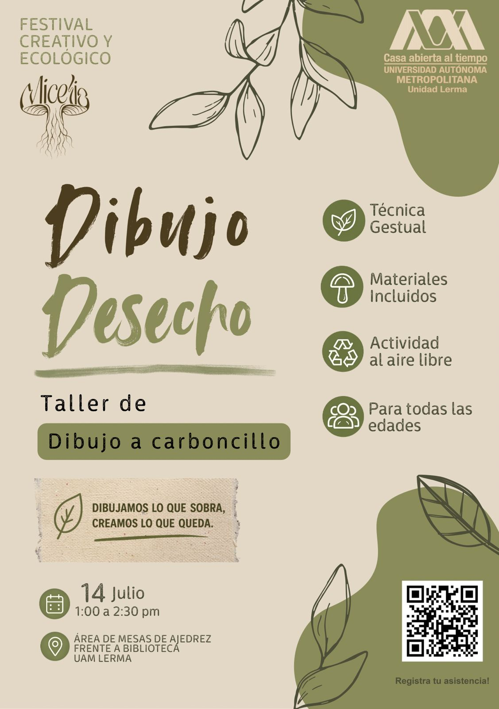

Festival Creativo y Ecológico Micelio
14 de julio de 2026, UAM Lerma.
La finalidad del Festival Micelio es fomentar una cultura ambiental mediante actividades que concientizan, educan, sensibilizan y enriquecen con nuevas perspectivas respecto al uso de residuos, adquisición de conocimientos en actos colectivos, participativos, en entornos lúdicos inmersivos, abiertos y accesibles.
El festival es organizado por el alumnado de IX trimestre de la Licenciatura de Arte y Comunicación Digitales de la UAM Lerma el cual contará con talleres, conversatorios y una experiencia inmersiva. Así mismo los talleres y conversatorios serán impartidos por el mismo alumnado e invitados especiales.
El festival está dirigido al público interesado en aprender temas ecológicos mediante prácticas artísticas.




